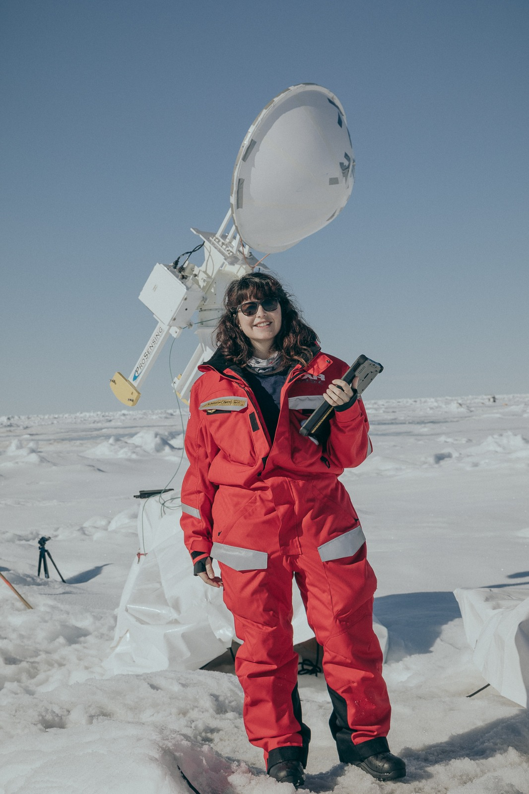

Aikaterini (Katia) Tavri
Postdoctoral Researcher, Brown University
As a scientist and educator, I am fascinated by the physical processes that shape the polar oceans – especially the dynamic marginal ice zone where sea ice meets open water. My research focuses on sea ice geophysics and wave–ice interactions, using microwave remote sensing to improve how these processes are represented in climate models.

I have always been drawn to understanding the physical processes of the ocean surface and how they can be observed from space. Over time, this curiosity has grown into a research path that brings together satellite remote sensing, field observations, and ocean–ice modeling to study the polar oceans—especially the dynamic marginal ice zone, where sea ice, waves, and open water interact.
My background in environmental science and oceanography gradually led me toward microwave remote sensing, where I became interested in how signals from sensors like Synthetic Aperture Radar and radiometers relate to the underlying physics of sea ice. Through experiences ranging from fieldwork during the MOSAiC expedition to working with satellite data and models, I have developed an approach that connects what we observe from space with the processes actually happening in the ocean and ice.
In my current work, I focus on linking these processes across scales—from small-scale interactions, such as wave-driven mixing and melt, to the larger patterns we see in satellite records and climate models. More broadly, I am interested in improving how we interpret remote sensing data and how these observations can better inform our understanding of a rapidly changing polar system.
Looking ahead, I hope to continue building connections between observations, models, and physical understanding, with the goal of making satellite data more meaningful for climate research. Outside of research, I enjoy writing poetry, painting with watercolor, and staying active through bouldering and cycling.